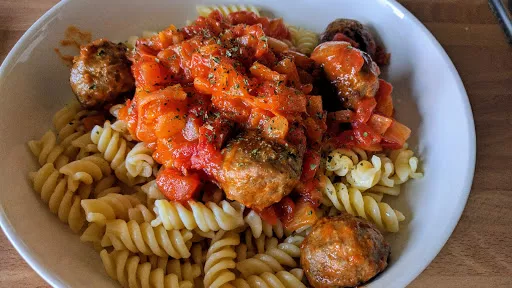

Speedy Moroccan meatballs
20 mins
Serves 4

A great twist on meatballs for a quick and tasty supper.
Ingredients
- 1 tbsp olive oil
- 350 g pack ready-made beef or chicken meatballs (approx 16)
- 1 large onion, sliced
- 100 g dried apricot, halved
- 1 small cinnamon stick
- 400 g tin chopped tomato with garlic
- 25 g toasted flaked almonds
- handful coriander, roughly chopped
Instructions
- Heat the
oil1 tbsp
in a large deep frying pan, then fry the meatballs350 g
for 10 mins, turning occasionally until cooked through. Scoop out of the pan and set aside, then cook the onion1 large
for 5 mins, until softened.
- Add the dried apricots,
cinnamon stick1 small
, tomatoes400 g tin
and half a can of water to the pan, then bring to the boil and simmer for 10 mins. Remove the cinnamon stick1 small
. Return the meatballs350 g
to the pan and coat well with the tomato sauce. Serve sprinkled with the almonds25 g
and corianderhandful
.
-
kcal
388
-
fat
25 g
-
saturates
9 g
-
carbs
24 g
-
sugar
17 g
-
fibre
6 g
-
protein
18 g
-
salt
1.58 g
www.bbcgoodfood.com
Short Link
Long Link